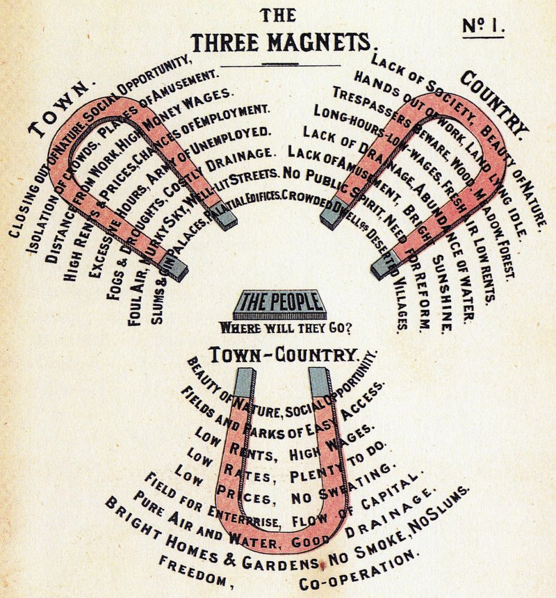
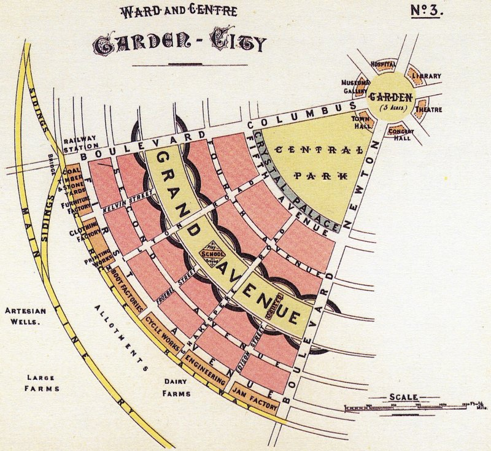
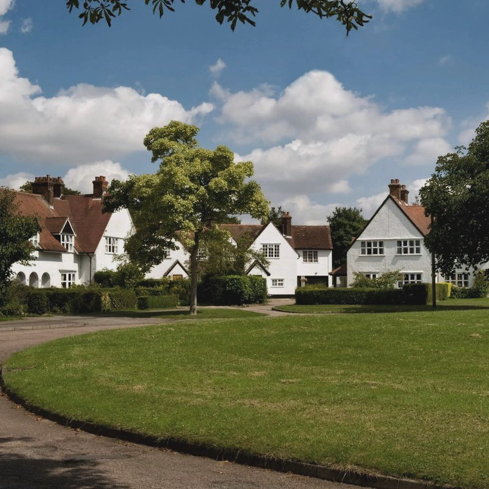
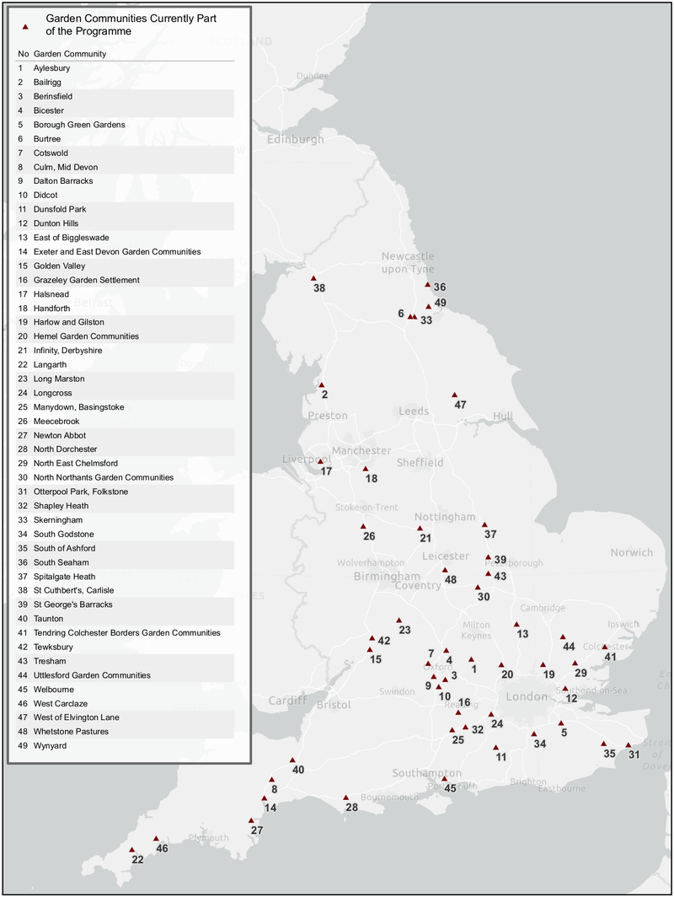
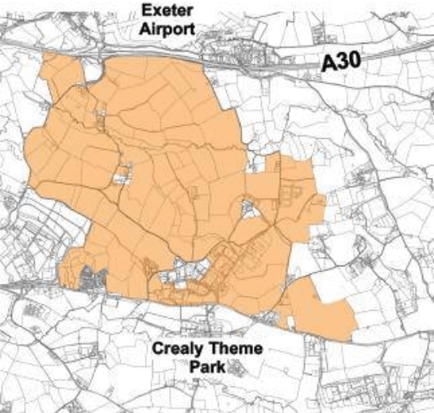
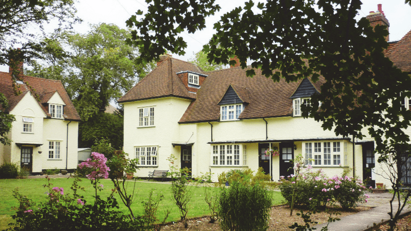

Five years ago next month Exeter City Council’s then-chief executive Karime Hassan unveiled his “Vision for a Transformational Housing Delivery Programme”, which was to build 11,000 new homes in the city over the following twenty years.
“Liveable Exeter”, as the development scheme was called, was to create a “compact global city of linked neighbourhoods” on eight mostly brownfield sites, the largest of which would see 5,500 homes replacing most of Marsh Barton industrial estate.
The scheme was also intended to address Exeter’s transport and housing affordability problems. It accompanied the council’s collaboration with Exeter City Futures, then still proposing to make Exeter “energy independent and congestion free by 2025”.
The following May the government approved a joint council bid for £750,000 under its “garden communities” programme to pay for “dedicated project teams, master planning work and studies to anticipate and offset the impact of housing growth” that the Liveable Exeter scheme would entail.
The scheme was accordingly rebranded as Liveable Exeter Garden City in July 2019, but despite receiving nearly £1.5 million in government funding awards it has yet to deliver a single new home.
Exeter’s garden city status has since been expunged from the new Exeter Local Plan, which is intended to guide development in the city for the Liveable Exeter scheme’s lifespan.
The new local plan nevertheless says that the “Liveable Exeter principles” it proposes as key strategic local planning policy have been “drawn from” from national garden city principles that the Town and Country Planning Association (TCPA) has updated from their 19th century origins at the government’s behest.
 The Three Magnets: Diagram No. 1 from To-morrow: A Peaceful Path to Real Reform
The government said it wanted to renew Ebenezer Howard’s utopian vision for urban planning, aimed at creating beautiful, healthy and co-operative new communities, so “people could work, raise families, travel easily and enjoy green spaces” in new versions of Howard’s garden cities.
Howard had set out his vision in To-morrow: A Peaceful Path to Real Reform, published in 1898 while he was working for Hansard as a shorthand writer. The book was retitled Garden Cities of To-morrow in 1902.
He was appalled by the condition of much Victorian housing for working people and wanted to see significant and radical change. Part of his motivation was that the new garden communities he envisaged could be a solution to a phenomenon that has persisted in various forms for centuries: the adverse impact of the economic and cultural differences between town and country.
He proposed a type of settlement in which the benefits of both could be combined into what might today be called a “sustainable community”. As the TCPA put it nearly a century later:
“Howard believed that by taking the best elements (or magnetic pulls) of the town (such as jobs, transport, social networks, and infrastructure) and the best elements of the countryside (such as space for agriculture, fresh air, and access to nature) and securing them “in perfect combination” in a new place (“town-country”) which provided high-quality affordable homes in well planned communities, it would be possible to achieve social justice and a better quality of life for all.”
 Garden City: Diagram No. 2 from To-morrow: A Peaceful Path to Real Reform
Garden City: Diagram No. 2 from To-morrow: A Peaceful Path to Real Reform
The first chapter of his book lays out what an ideal garden city might look like. It would be a broadly circular settlement, set within agricultural countryside alongside a main railway line.
A population of some 32,000 people would live in houses with gardens arranged around a central park intersected by radial boulevards with workshops, factories and markets at its edge.
The rest of Howard’s book is less about design and more about garden city financing and governance. A key aim was to secure development funding in such a way that residents had a permanent financial share in the community. The TCPA explains this as follows:
“The land ownership (in today’s terms, the freehold) of the entire development would be retained by a limited-profit, semi-philanthropic body similar to a community interest company or trust: income earned from capitalising on the increasing land values which result from development – known as ‘betterment’ – and from residential and commercial leaseholders (with uplift on reversion at the end of lease periods) would be used to repay the original development finance debts.
“As these debts were gradually paid off, and as land values rose, the money could be increasingly invested in community assets and services, building up what we might think of as the garden city ‘mini-welfare state’.”
 Ward and Centre: Diagram No. 3 from To-morrow: A Peaceful Path to Real Reform
As the TCPA says, Howard’s garden city concept was “sophisticated, radical and practical”, encompassing “planning, design, economics, sociology and environmentalism.” Unfortunately, however, his painstakingly worked-through ideas only briefly survived contact with the real world.
Letchworth Garden City, begun in 1903 in rural Hertfordshire, has followed his development model most closely. The developer was a company established by the Garden City Association, founded immediately after publication of Howard’s book (and which eventually morphed into the TCPA).
However it failed to raise sufficient start-up funds and so was unable to build houses or other facilities for more than ten years. Only middle-class families with the capital to build their own homes moved in and Howard’s utopian vision was not realised.
Many of Howard’s ideas about sustainable, healthy, well-designed new communities nevertheless persisted, and now look prescient in the face of climate change.
 Westholm Green, Letchworth from The Historic England Blog
In 2011, the newly-elected coalition government invited the TCPA to “reinvent the garden city for the 21st century”. The following year the Prime Minister announced that the government would “apply the principles of garden cities to areas with high potential growth in places people want to live”.
The TCPA’s work on distilling Howard’s ideas into a set of contemporary principles was accompanied by a range of research reports, guides and practical resources. These covered planning, investment, land assembly, delivery and long-term stewardship to enable the proposed renaissance of Howard’s vision.
In 2014, the government began offering support for new settlements of 15,000 homes or more in a prospectus called Locally-led Garden Cities. Subsequent guidance broadened the scope of this support, inviting applications to develop garden villages of between 1,500 and 10,000 homes and garden towns and cities of more than 10,000 homes.
This guidance was then superseded by another funding bid prospectus called Garden Communities in 2018. While the government hadn’t explained what it meant by “garden community” in either of the two previous documents, this time it said: “Each garden community we choose to assist will have its own clear and distinct sense of identity”.
While it stopped short of making adherence to garden city principles a pre-requisite of participation in the programme, it nevertheless said that its plans were “not about creating dormitory towns, or places which just use ‘garden’ as a convenient label”.
Instead it said they were “about setting clear expectations for the quality of the development and how this can be maintained (such as by following garden city principles).”
It added: “We want to see vibrant, mixed-use, communities where people can live, work, and play for generations to come – communities which view themselves as the conservation areas of the future. Each will be holistically planned, self sustaining and characterful.”
Thus far, Howard would almost certainly have approved. But then 21st century pragmatism takes over. The garden communities bidding prospectus continues: “Proposals can be for a discrete new settlement, or take the form of transformational development of an existing settlement.”
 October 2020 Garden communities programme map.
Source: MHCLG. Contains OS data © Crown copyright and database right 2019.
Presumably this language, and the potential for government funding behind it, was what encouraged Karime Hassan to propose his “Vision for a Transformational Housing Delivery Programme” in 2019, then rebrand it as “Liveable Exeter Garden City” a couple of months later when the money was in the bag.
The bid for this funding was submitted jointly with East Devon District Council and Teignbridge District Council, with Exeter City Council as the lead partner. At the time the three authorities were still working together, with Mid Devon District Council, to develop the Greater Exeter Strategic Plan.
(Although the Greater Exeter Strategic Plan was abandoned in August 2020 when East Devon withdrew, the funding would have supported its development.)
The bid document framed the funding award as the “Exeter & East Devon Garden Communities” programme. It said: “A unique characteristic of the […] proposal is that it includes elements of both a free-standing new community and a transformational approach to development in Exeter and its environs.”
However East Devon District Council did not rush to embrace garden community status. An October 2019 report made clear that it neither affected existing development delivery processes nor, in fact, had much to do with gardens either.
Instead, it provided an “opportunity to engage with government and its agencies to identify investment priorities and other support needed to ensure that future growth and development is delivered to a set of high standard principles”.
The report added: “Garden communities status will help to support this process both directly through additional revenue funding and indirectly through greater government support (referred to as ‘brokerage’) going forward.”
2018 garden communities presentation by now-Exeter City Council development director Ian Collinson
East Devon District Council subsequently promoted a “free-standing new community” of 8,000 homes in the first draft of its new local plan, published in November 2022.
Described as “a second new town east of Exeter” (after Cranbrook) it was billed as providing an initial tranche of 2,500 homes by 2040 and a further 5,500 over the remainder of the century. It would also include employment provision, a town centre and social, leisure, health, community and education facilities.
It prompted significant criticism, but East Devon District Council nevertheless decided in December last year to develop it on 1,300 acres of land between Exeter Airport on the A30 and Hill Barton Business Park on the A3052, east of Westpoint Arena.
The “Exeter & East Devon Garden Communities” programme funding bid had promised that “Clyst Villages garden community will be a 21st century adaptation of the garden town”, adding that “the concept of separate and distinct ‘villages’ networked to provide the combined population and spending power of a town is central to our design approach.”
However the “networked village” concept was not carried though into the draft East Devon local plan, nor do any of “garden community”, “garden city” or “garden town” appear.
A comment in the October 2019 report explained why: “The discussion concept of a network of linked villages, referred to as Clyst Villages, was put forward in order to satisfy the requirements of the [government funding] application process”.
 East Devon new town location map. Source: East Devon District Council.
Exeter City Council had no need to take a similarly cynical approach to obtaining funding under the government garden communities programme: its part of the bid was submitted under the “transformational development of an existing settlement” option.
Karime Hassan suggested that the city should have first call on the money as the only council involved in the joint bid that would be able to make rapid progress on development delivery. He stressed the importance of proceeding “at pace” (an expression repeatedly used in his report) and being able to respond to changing circumstances in an “agile” fashion.
He also proposed the creation of what he called Liveable Exeter Garden City Board to “ensure that momentum is maintained” and respond “as and when East Devon and our partners are in a position to commit to firm proposals”.
The new board was to involve a “broad mix of partners” to expedite development delivery and provide “confidence for funding initiatives to be channelled through the structure”. It was to be “the vehicle through which Exeter will ensure that the desired transformational housing agenda known as Liveable Exeter Garden City is achieved”.
The city council executive committee agreed. It recommended a council budget of “up to £750,000”, the whole garden communities programme grant including the other councils’ share, and the creation of the board.
The proposed garden city board was renamed Liveable Exeter Place Board by the time it first met later that year.
 Land Trust garden community development of 3,000 homes at Beaulieu, near Chelmsford. Photo: TCPA.
Land Trust garden community development of 3,000 homes at Beaulieu, near Chelmsford. Photo: TCPA.
The city council was awarded another £475,000 in government garden city funding in June 2021 then a further £250,000 from the same source twelve months later, bringing the total allocated to the scheme’s development to £1,475,000.
However the outline draft version of the new Exeter local plan that was published for public consultation in October 2022 only mentions Exeter’s “garden city” status once in around 28,000 words. It says the government awarded it “in recognition of our ambitious growth strategy”, not because the Liveable Exeter development scheme has anything to do with garden city principles.
And by the time the full draft version of the plan that is currently out for consultation was published in October last year this reference to the Liveable Exeter scheme’s status had vanished from the plan’s now 48,000 words.
Instead, the scheme is described as “a growth and city-making initiative” that is governed by seven Liveable Exeter “principles” which have been “drawn from” the Liveable Exeter Place Board’s “Exeter Vision 2040” (adopted back in 2019) and national garden city principles.
However the Liveable Exeter principles that are proposed as strategic planning policy S2 in the full draft of the new Exeter Local Plan (and slightly extended in a related evidence base document) are not formed from the board’s “Exeter Vision 2040”, and it is this planning policy that will be used to determine applications for planning consent and so decide development delivery in the city.
Exeter City Council new Exeter Local Plan full draft strategic policy S2: Liveable Exeter principles
The TCPA describes its updated version of Howard’s original garden city principles as a “distillation” of “key elements” that “form an indivisible and interlocking framework” for 21st century development delivery.
Comparing the proposed “Liveable Exeter principles” in the council’s full draft Exeter Local Plan with these national garden city principles shows that while some of what the council says echoes the TCPA’s updating of Howard’s ideals, there are some very substantial differences between them.
For example, the TCPA stresses the importance of beautifully and imaginatively designed homes with gardens. Homes with gardens are not mentioned in the Liveable Exeter principles and the draft Exeter Local Plan, far from promoting such gardens, supports “developments in residential gardens”.
The importance of community ownership of land and the long-term stewardship of assets is also at the centre of Howard’s vision and the TCPA update. Effective stewardship arrangements were put into practice in Letchworth where the residual assets of the original development company were incorporated into the Letchworth Garden City Heritage Foundation, a self-funding charity that reinvests for the long-term benefit of the local community.
Endowment income generated mainly from its property portfolio enables the Heritage Foundation to provide additional services and facilities to those provided by the local authority, North Hertfordshire District Council. The Foundation has provided a cinema, a day hospital, a museum, a family farm, a community hub and more.
It also operates a management scheme to protect the appearance of most of the residential parts of the town at no cost to local residents.
 Arts and crafts housing in Letchworth. Photo: TCPA.
Stewardship only gets a single mention in the new Exeter Local Plan’s Liveable Exeter principles. It says a development will “ensure neighbourhoods function effectively in the long term by incorporating stewardship measures which provide for the effective management and maintenance of the public realm and communal private spaces”.
The city council might like to argue that its ownership of a very significant proportion of the city’s land and property assets constitutes an effective form of stewardship, but this claim on comfort was recently bleakened by the prospect of the fire sales of Mary Arches Street car park and the site of the demolished Clifton Hill sports centre.
Both TCPA garden city and Liveable Exeter principles also propose the construction of new affordable housing (although the council omits “genuinely” from its formulation) but developers – including Exeter City Living, the council’s own property development company – are well-versed in employing viability arguments to reduce the number of affordable homes in new developments.
In Letchworth this problem is partially overcome by its Heritage Foundation arrangements, which apply to new development on Foundation-owned land and so lead to value generated by new development being reinvested back into the town and its community.
In addition, foundation governors are elected by the local community, nominated by local groups and societies or appointed by the Heritage Foundation itself. The governors elect a board of trustees, the decision-making body, with two places reserved for nominees of the local councils.
Exeter, in contrast, is a long-established settlement with standard local authority governance. Letchworth was built on green fields, but proposed Liveable Exeter development sites are all brownfield. A local housing market also already exists here, with rents and purchase prices among the least affordable in the country.
The weakest link between the TCPA garden city and Liveable Exeter principles is financing. This probably presents the most significant challenge to delivering garden city ideals via the Liveable Exeter development scheme among many it faces.
Although the February 2019 city council report that launched the Liveable Exeter scheme did not mention it, Exeter City Futures had by then already been working on Exeter Development Fund as the means to finance the Liveable Exeter scheme for nearly eighteen months, with the council’s behind-the-scenes blessing.
The fund, an outline of which was presented to the council’s Executive in July 2018, was supposed to use council-owned land and property assets as collateral to access private finance to pay for new development, while pooling as much government infrastructure money as possible into one citywide pot to make the fund big enough to be of interest to major institutional investors.
In theory the fund would have been able to recycle its surpluses into other development projects across the city, not entirely unlike the way Letchworth Garden City Heritage Foundation creates local community wealth.
However the fund’s model intended significant private profit based on universal rent extraction: none of the 12,000 new homes it proposed were intended for purchase. It was riddled with risks even before Brexit, the COVID-19 pandemic, the war in Ukraine and interest rate rises rendered its financing and viability assumptions redundant.
Nor could anyone answer basic questions about the fund’s governance when questioned, and no convincing mitigation for the risks involved in the council investing so many of its assets in an untested financing and delivery vehicle was provided either.
Exeter Development Fund presentation slide – whose hand, whose money and is it going in or out?
The development fund was supposed to come under greater scrutiny before going any further but a 2022 decision to set up a council committee working group was never implemented despite councillors voting in its favour.
The council is nevertheless in the process of appointing consultants to follow through without Exeter City Futures’ demise giving it pause – because parent company Global City Futures, which was supplying all the staff that worked on the fund (and billing the council for them via its subsidiary) is still there, in the background, pursuing its interests in the scheme.
Like Liveable Exeter garden city delivery, the development fund has not progressed “at pace”. Detailed proposals for the Southgate site that is being modelled for fund-financed development were expected last November, more than six years into the project. They did not appear, and the council has not said when it expects to bring them forward instead.
The government has already awarded £1.2 million to finance the creation of Exeter Development Fund, on top of the £1.5 million garden city programme funding, so while the fund’s future seems far from certain, it may be that the council simply must try to save face in Whitehall by delivering at least one development site on this basis.
 Haven Banks redevelopment scheme
Haven Banks redevelopment scheme
However Exeter in 2024 is a long way from Letchworth over a century ago. Ebenezer Howard’s utopian ideals were diluted by financial reality and the Liveable Exeter principles may well go the same way.
The deeply unpopular build to rent redevelopment scheme at Haven Banks is the first in the city to gain planning approval under the Liveable Exeter scheme’s banner. Its density and amenity levels are about as far from Howard’s garden city vision as they could be while community ownership and stewardship, as well as gardens, are nowhere in sight.
Letchworth was built on green fields, aiming to marry town and country. Its developers did not have to contend with the challenges of urban redevelopment, in which demolition, contaminated land, historical remains and brownfield remediation measures conspire to push up costs before the first brick is laid.
It is these costs which enable developers to tell the city council that however much they might want to provide more affordable housing it simply isn’t financially viable to do so.


.jpg){kind=link}
.jpg){kind=link}
.jpg){kind=link}